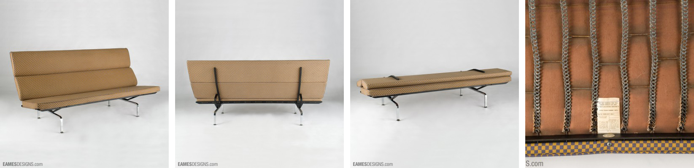

Seating 473 Sofa Compact

1965 Herman Miller 473 Sofa Compact 1965 Seat height 15 7/8 H 34 7/8, W 72 1/2, D 29 7/8 Weight 140 lbs. Alexander Girard Checker upholstery Flat black enamel steel frame with polished chrome plasted steel legs J.F. Chen Collection